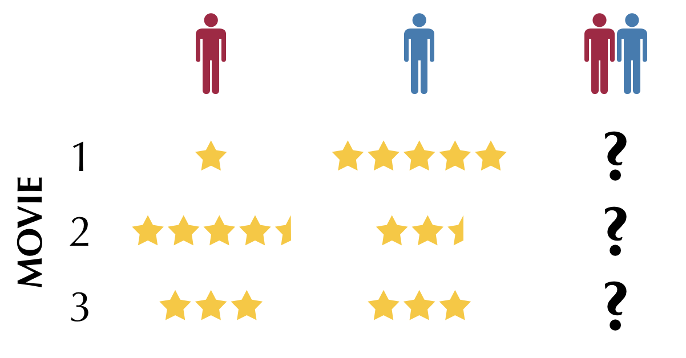

recommending television for groups
Let’s say you know the movie preferences for two individuals and these two want to watch a movie together. What do you recommend for them to watch? Previous work merged individual preferences for group setting with fairly simple preference aggregation functions, and each of these functions encode different value systems.
We found that empirically, social influence has complex effects on the way people express their preferences. Groups are more complex than the sum of their parts and predicting group preferences requires modeling both groups and individuals well because viewing habits shift substantially between individual and group contexts.
citation
@inproceedings{Chaney:2014,
author = {Chaney, Allison J.B. and Gartrell, Mike and Hofman, Jake M. and Guiver, John and Koenigstein, Noam and Kohli, Pushmeet and Paquet, Ulrich},
title = {A Large-scale Exploration of Group Viewing Patterns},
booktitle = {Proceedings of the ACM International Conference on Interactive Experiences for TV and Online Video},
series = {TVX '14},
year = {2014},
isbn = {978-1-4503-2838-8},
pages = {31--38},
doi = {10.1145/2602299.2602309}
}resources
- A Large-scale Exploration of Group Viewing Patterns [via ACM Digital Library] [PDF]
- Mining Large-scale TV Group Viewing Patterns for Group Recommendation [MSR Tech Report]